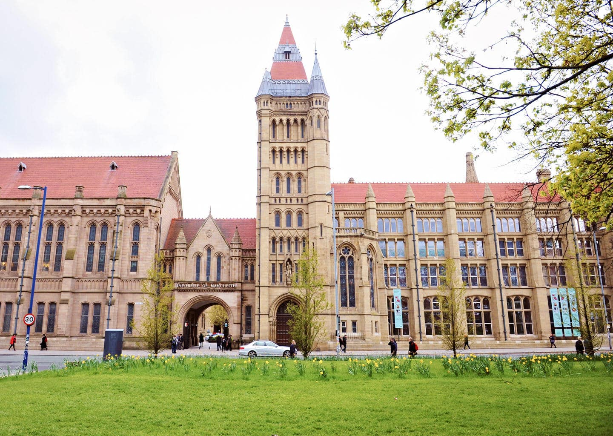
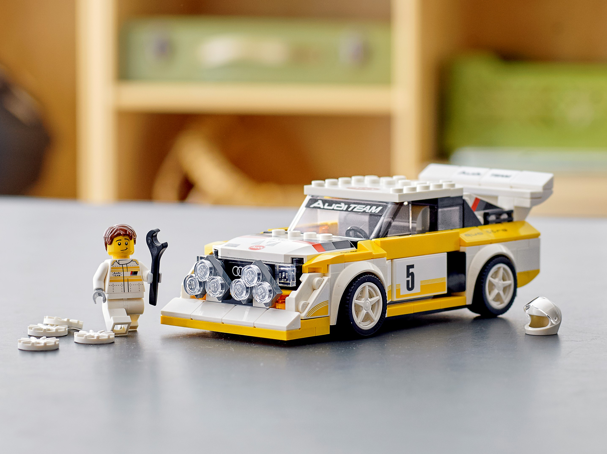

Stuart Tomaney currently attends the high school Canyon Crest Academy (CCA), planning to graduate in May of 2026. Over his four years at CCA, he has consistently taken classes in subjects such as mathematics and physics, in order to build a knowledgeable foundation for a future career in engineering. Notably, he has aced rigorous classes such as AP Calculus BC and AP Physics C: Electricity and Magnetism. With university just on the horizon, he currently has received offers from all around the world including Purdue University in West Lafayette, Indiana and The University of Manchester in the United Kingdom. In fact, these prestigious universities consistently rank globally within the Top-10 to Top-30 universities for aerospace engineering (according to: QS World University Rankings ), his intended major. In the future, Stuart plans to research and develop supersonic and hypersonic systems intended for both commercial aviation and the military sector.

Stuart was born in the early 2000s in northern California. Growing up in the suburbs of San Francisco, Stuart immersed himself in activities such as playing the piano and eventually the trumpet. One of his most favorite pastimes, even to this day, was building legos. Whether that was building sets, or creating his own designs, he typically focused on building vehicles such as submarines or trains. As he grew older, it was clear that he had an engineering inclination as his everyday life was filled with building forts, Legos, and small circuits. Simple items such as blankets, cardboard boxes, and miscellaneous objects were often crafted into intricate forts that Stuart took pride in building. It was also during this time that he was introduced to two of his favorite sports, soccer and skiing.

Over Stuart's lifetime, he has accrued many distinct interests in sports and engineering. For example, in the summer of 2021, Stuart gained a strong passion for soccer or ‘football’ after watching England make it to the finals of the UEFA European Championship. His father's nationality has compelled him to support Newcastle United Football Club: who just recently won the English Football League (EFL) Cup after defeating Liverpool Football Club in a historic 2-1 victory at Wembley Stadium in March of 2025. On another note, Stuart has developed a strong interest in both motorsport vehicles and aircraft. By attending numerous airshows across the Western United States, watching documentaries, and reading books about aerospace innovations, he has not only gained extensive knowledge about aircraft, but also a unique enthusiasm for them. Over time, this interest has also expanded to include motorsport vehicles after Stuart received his license in early 2025, compelling him to research specific details about the car he drives each day ( The Toyota RAV4 V6 FWD).